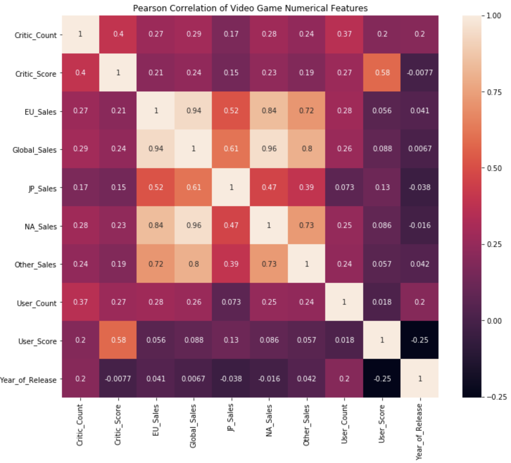

Video Game Sales - Cheng Miao
Introduction and Object
This project uses a variety of data visualization tools to represent the relationship between the features of video game sales, game types, player ratings, and year of release. Use these tools to make advanced, beautiful, and easy-to-understand data visualization charts.
* This picture shows the correlation between features. This picture is from Python
* Here is starting the Tableau visulization work for video games